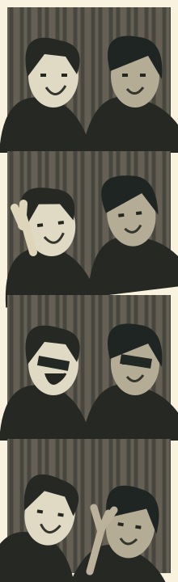

Four people,
four minutes,
four frames.
Proper chemical photo booths from the seventies, restored and driven to your wedding, party or launch. Black and white film, developed on the spot.
Check your date ↗
A digital booth prints a picture. A chemical booth makes one, in a tray, in the dark, while four people stand outside arguing about who blinked. The waiting is the point.
Our three machines were built between 1972 and 1979, and they still use the same silver based paper and the same four flashes, eight seconds apart.
Old souls.
Very good company.
Select a booth to get to know it.
Chrome and cream enamel, the loudest shutter of the three.
Original illustrated strips stand in for event photographs in this concept.
We bring the booth.
And everything else.
- An attendant all night.
- One of us stays with the booth, loads the film and fixes the jams.
- Unlimited strips.
- Every group gets one. Nobody counts.
- A guest book.
- A second strip goes in the book with a note beside it. This is the thing couples keep.
- A props box.
- Hats, glasses and one questionable wig. Left in the van if you would rather.
- Digital copies.
- Every strip scanned at 1200dpi and sent within a week.
A night to keep.
Three hours
Attendant, unlimited strips, digital copies
595 GBPFour hours
Everything above, plus the guest book
695 GBPAll evening, six hours
Everything, plus a second props box and late collection
845 GBPWhat should we check about the room?
Tell us the venue, access route and available space by email. A person needs to confirm access and availability for your chosen booth.
Always the last
ones on the dance floor.
Illustrated venue studies, not documentary photographs.
“The queue for the booth was longer than the queue for the bar, which my father in law still brings up.”
Tell us the date
and the room.
Check your date ↗Call 0113 555 0182Concept contact details. Availability is confirmed by a person, not this page.